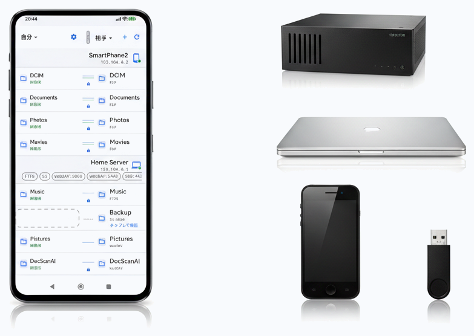
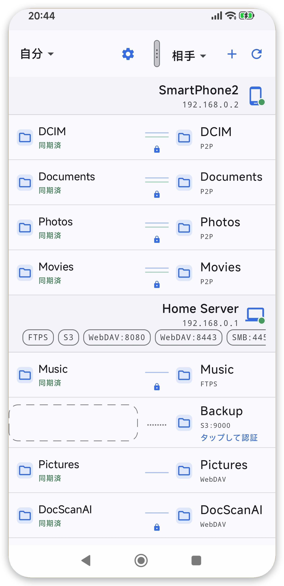
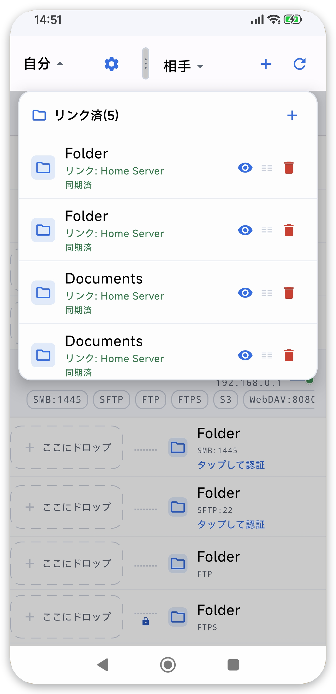
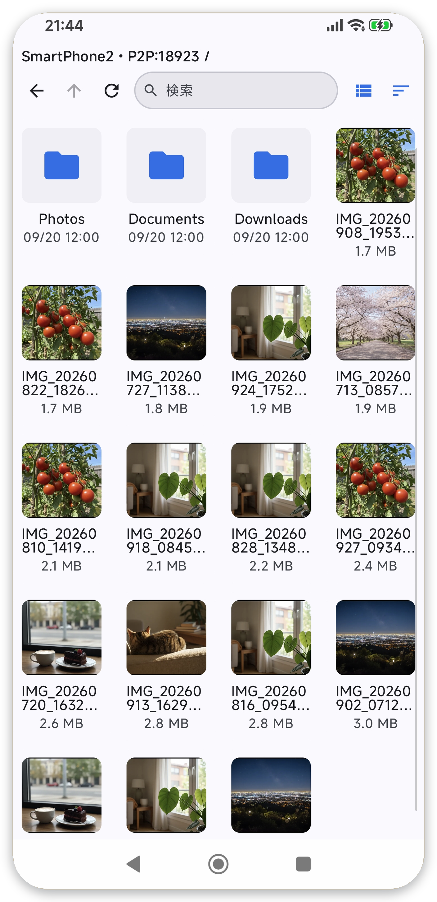
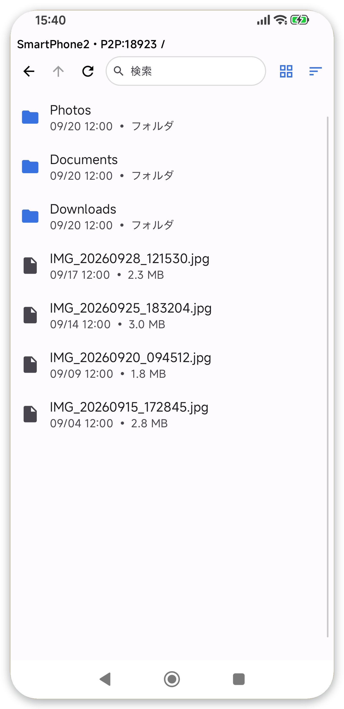
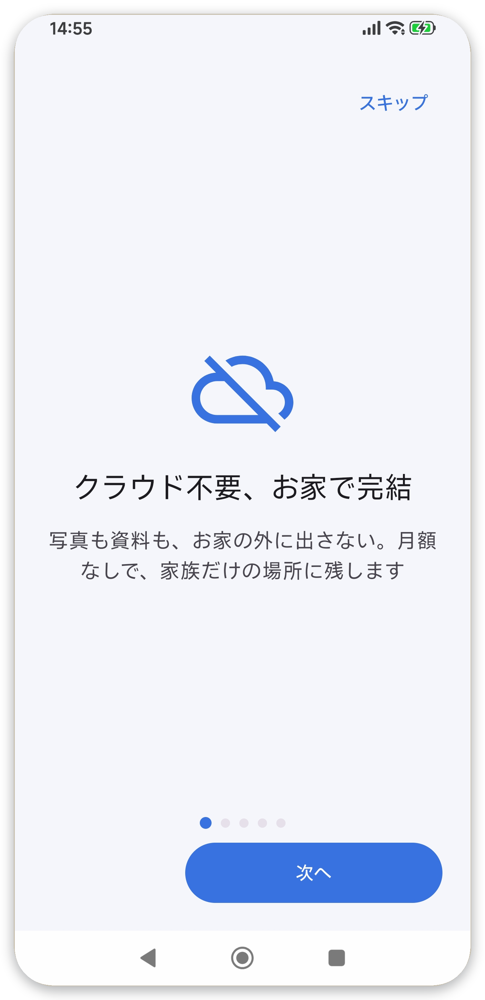
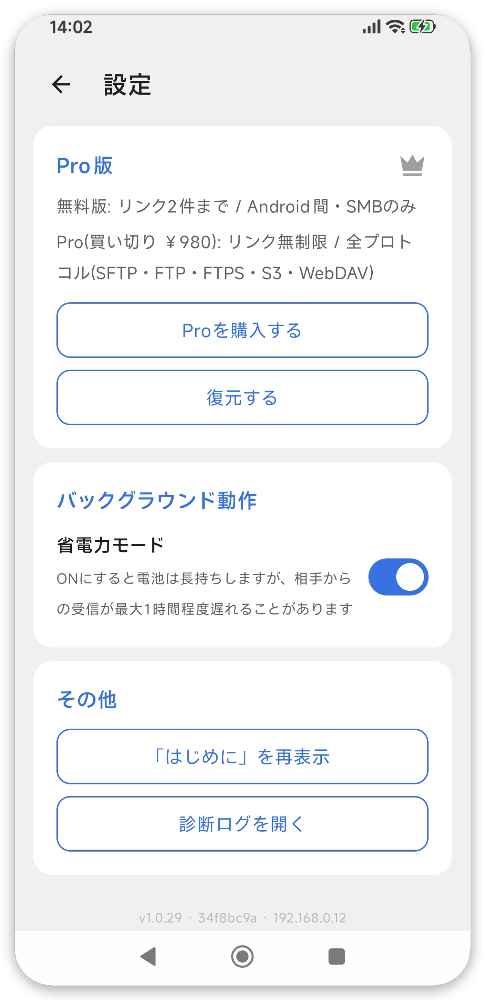

クラウド不要
写真も資料も、お家の外に出さない。月額なしで、家族だけの場所に残します。
お家のWi-Fiで共有・バックアップ
同じWi-Fiのスマホ・PC・NAS・USBメモリと直接やりとり。クラウド不要・追加料金なしで、撮った写真や大事な資料を自動でバックアップします。

写真も資料も、お家の外に出さない。月額なしで、家族だけの場所に残します。
帰宅してWi-Fiにつながれば、写真や資料をUSBメモリやNASへ自動で保存します。
同じWi-Fiの家族のスマホやPCと直接やりとり。アップロード料金なしで、その場で渡せます。
HOW IT WORKS
むずかしい設定はありません。
共有・バックアップしたい端末側のフォルダを選びます。
同じWi-Fiの相手（アプリ端末 / SMB / SFTP / WebDAV / S3）を選びます。
あとは自動。双方向の同期か、片方向のバックアップで動きます。
FEATURES
クラウドを使わず、お家のネットワークで完結。
2台のフォルダを双方向で同じ状態に保ちます。
Wi-Fiにつながれば、端末から保存先へ自動で保存します。
大量削除を検知して確認。削除は7日間 .trash から復元できます。
画面を閉じても同期を継続。止まっても自動で復帰します。
端末と相手のフォルダをその場で見て、コピーや履歴から復元できます。
アプリ同士(P2P)に加え、SMB / SFTP / FTP・FTPS / WebDAV / S3互換に対応。
PROTOCOLS
Windows共有・NAS・Linuxサーバ・クラウドストレージまで、いつもの保存先にそのまま。
COMPARE
同期アプリはほかにもあります。違いは「範囲」と「相手」です。
| 項目 | ShareOrBackup | FolderSync | Syncthing | Google One |
|---|---|---|---|---|
| 双方向同期 | ◯ | ◯ | ◯ | ✕ |
| アプリ同士P2P | ◯ | ✕ | ◯ | ✕ |
| 既存サーバーへ直接（相手に導入不要） | ◯ | ◯ | ✗ | ✕ |
| クラウド不要 | ◯ | △（対応可） | ◯ | ✕ |
| 初期設定 | ◯（同じWi-Fiで選ぶだけ） | △（サーバー情報を手入力） | △（デバイス・フォルダの相互承認） | ◯（ログインのみ） |
| バックグラウンド動作 | ◯（画面OFFでも継続） | ◯ | △（Dozeで停止、手動除外が必要な場合あり） | ◯ |
| アプリ内の広告 | なし | あり（無料版） | なし | なし |
| 料金 | 無料・Pro買い切り（一度きり） | 無料・Pro買い切り（一度きり） | 無料 | 月額（継続課金） |
◯＝標準対応、△＝一部対応・条件付き、✗＝非対応。2026年10月時点の公開情報にもとづく比較です。具体的な金額の比較はクラウド費用の記事へ。
SCREENS
端末と保存先を一覧で管理。状態がひと目でわかります。






PRICING
Pro は買い切りの追加機能。クラウドの月額はありません。
FAQ
いいえ。やりとりは家庭内ネットワークの中で完結し、外部クラウドには送りません。
はい。画面を閉じてもバックグラウンドで動作し、止まっても Wi-Fi 復帰や定期復帰で自動的に再開します。
削除や上書きの前の版は .trash に退避され、7日間は履歴から復元できます。
かかりません。無料で使え、Pro は一度きりの買い切りです。
アプリ同士(P2P)のほか、SMB / SFTP / FTP・FTPS / WebDAV / S3互換に対応します。
NAS側でSMB（Windows共有）またはSFTPを有効にします。同じWi-Fiにつながっていれば、アプリがNASを自動で検出するので一覧から選ぶだけです。特別なソフトは不要です。
はい。USBメモリや外付けドライブを端末に接続し、保存先として選べます。NASやPCがなくても自動バックアップできます。
基本は同じネットワーク内での利用を想定しています。外出先から自宅の保存先へ直接つなぐ場合は、VPNなどの設定が必要です。
Android 8.0（API 26）以降に対応しています。
同期は2つのフォルダを双方向で同じ状態に保ちます。バックアップは端末から保存先への片方向コピーで、元データを守ります。
どちらも双方向のフォルダ同期ができ、クラウドを使いません。違いは範囲と相手です。SyncthingはSyncthingを入れた端末同士を、LANでもインターネット経由でも同期します。ShareOrBackupは同じWi-Fi内を基本とし、アプリ同士に加えてSMB・SFTP・WebDAV・S3互換の既存サーバーへ直接つなげます。外出先から同期したいならSyncthing、自宅のNASやPCへ写真を逃がしたいならShareOrBackupが向いています。